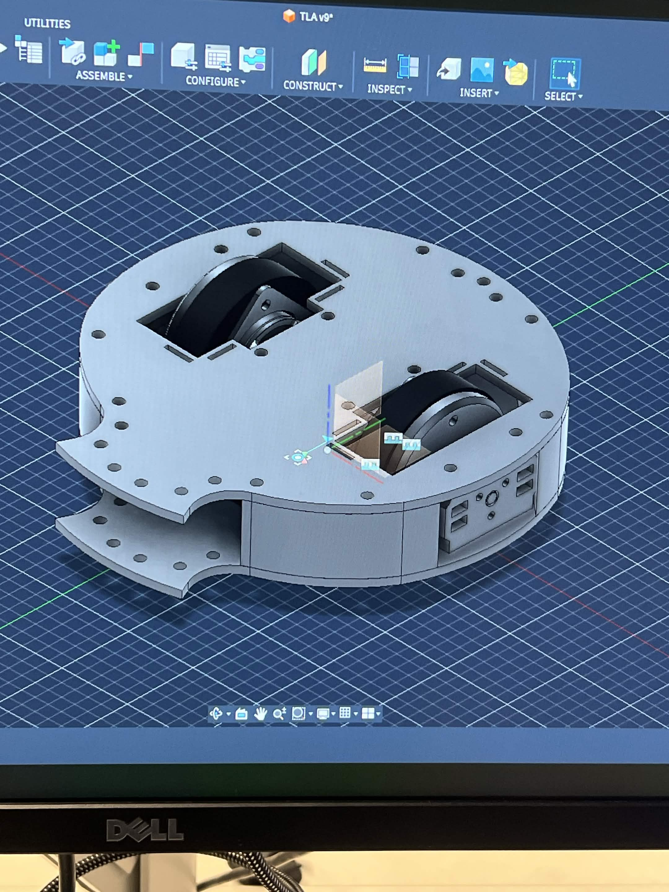
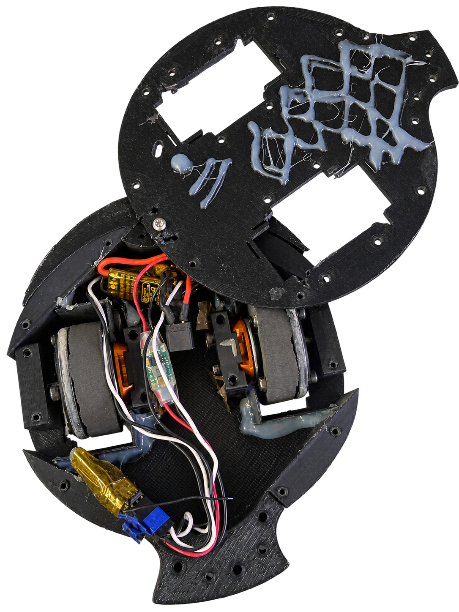

My role
Team of two; I led much of the design, focusing on drivetrain and chassis.
Kavan Ramaswamy designed the wheel mounting and handled assembly, soldering, and wheel manufacturing.
Design approach
At Railside Robotics' 48-hour Buildathon over Labor Day weekend in September 2026, each team received 1 kg of PLA to build a one-pound plastic antweight. Our two-person team was given a fish-shaped sketch as our assigned design. The challenge was to interpret it and match the drawing as closely and thoughtfully as possible. Because the sketch resembled a melty brain, we chose to make it function as one, competing after 24 hours and again at 48 hours.
I led much of the design, focusing on the drivetrain and chassis. We used Fusion 360 because Kavan was more proficient in it; although I was more familiar with SolidWorks, I adapted quickly so we could collaborate. Kavan designed the wheel mounting and handled assembly, soldering, and wheel manufacturing.

Building and driving a melty brain
A typical melty brain uses a controller to measure rotation and pulse the motors for translation. Without that controller, I manually varied the relative speed of the two drive motors while driving. The approach required estimation, but produced useful translation and let me line up shots.
Balance was a key challenge. We designed for balance in CAD, then added screws as ballast to adjust the center of gravity. We also designed the PLA motor mounts with enough material around the motors to withstand heat when they stalled; the mounts held up.
To work within the tight deadline, we designed chassis components as flat pieces rather than tall parts. Printing with less height let us iterate faster and produce spare parts in time for competition.

Testing and iteration
After the 24-hour competition exposed chassis structural issues, we added material along the weapon-impact load path. The revised chassis held together well in the second competition.
In the second competition, foam wheels failed and screws backed out. We reduced wheel speed for the next match, but could not fully resolve the issue during the event. In a future revision, I would use a more robust wheel material, improve screw retention, and consider lower-kV motors: the available motors were operated at about 30%, and the robot experienced heating and stalls.
Competition Results
FIH went 3-0 and won the 24-hour competition. At 48 hours, it went 1-2; both losses involved motor stalls and a depleted battery. Across both competitions, the combined record was 4-2.